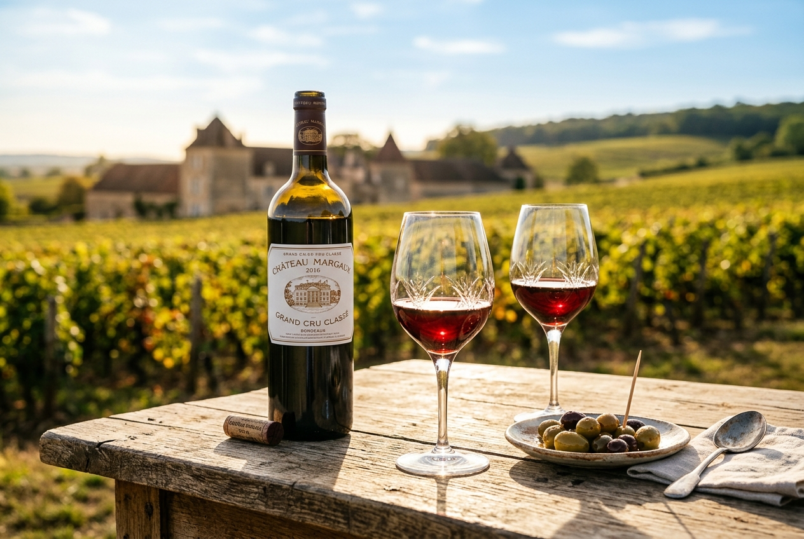

1. Lyxigt B&B (Chambre d'Hôtes)
Slottets huvudbyggnad inrymmer 5 exklusiva lyxsviter som drivs som Chambre d'Hôtes (B&B). Genom att begränsa boendet till max 5 rum och 15 gäster uppfyller vi de franska reglerna för Chambre d'Hôtes, vilket helt befriar oss från ERP-klassificeringens dyra säkerhets- och handikappkrav. Detta ger hög lönsamhet per rum med minimal fast personal.
2. Bröllop, Event & Konferens
Med över 1 620 m² uthus och det nyrenoverade fårhuset (Fas 2) skapas en spektakulär miljö för bröllop, företagskonferenser och retreats. Läget i Occitanie med närhet till flera flygplatser gör det enkelt för internationella sällskap att resa hit.
3. Hållbart Jordbruk & Olivodling
Egendomens stora garrigue- och hedområden (~270 ha) utnyttjas för ekologisk boskapsskötsel med härdiga Aubrac-nötkreatur. Detta kombineras med tryffelodling samt en expansion av olivlunden från 1 till 5 hektar för att producera exklusiv gårdsolivolja till gäster och restauranger.
4. Ekoturism, Jakt & Outdoor
Den privata dammen på 1,7 hektar erbjuder enastående miljö för ekologiska timmerstugor (cabins). För att fylla gästrummen och stugorna under vardagar och lågsäsong (höst/vinter) anordnas exklusiva jaktpaket för klövvilt samt arrangerade retreats för gravel biking, ridning och vandring. Detta säkrar en jämn beläggning året runt.
5. Framtida potential: Solenergi
Som en del av fastighetsutvecklingen utreds en markmonterad solcellspark på 1–10+ MW i Thézan-des-Corbières. Detta projekt tillvaratar outnyttjad mark (hed/garrigue) och skapar en stabil, långsiktig intäktsström genom försäljning av förnybar el till elnätet.

Vinprovning på terrassen
Samarbete & Privat Etikett med lokala odlare
Historisk Vinharmoni utan Driftsrisk
Genom att samarbeta med en lokal producent som sköter vinodlingen under ett arrendeavtal, bevarar vi fastighetens rika vinhistorik utan att ta på oss driftsansvar eller CapEx.
Vår partner buteljerar ett exklusivt vin under slottets eget varumärke, **Château Corbières**, vilket vi serverar till hotell-, konferens- och eventgästerna. Detta bevarar slottets vinhistoriska profil och ger en högmarginalprodukt för hotellrörelsen helt utan jordbruksrisk.
Ekoturism, Vandringsleder & Rekreation
Den privata dammen på 1,7 hektar erbjuder en enastående miljö för rekreation och exklusivt boende. Här planeras uppförandet av lyxiga, självförsörjande ekoturiststugor (cabins) i kanten av tallskogen med utsikt över vattnet.
Egendomens vidsträckta 307 hektar erbjuder oändliga möjligheter för naturaktiviteter. Gästerna kan vandra och cykla längs de anlagda naturstigarna genom garriguen, med den vackra Alaric-bergskedjan som bakgrund. Detta skapar en attraktiv retreatmiljö för gäster som söker stillhet och orörd medelhavsnatur.